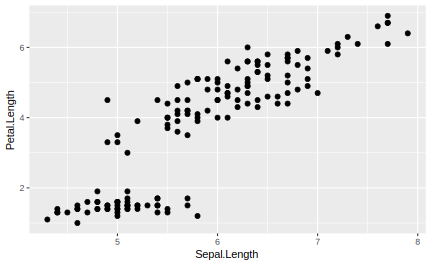
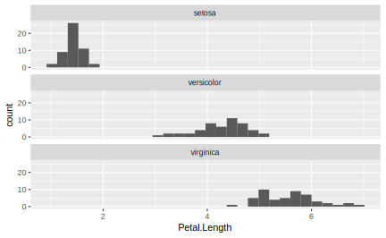

3 Data Visualizations
Good marketing tells a story, it evokes an emotion, and elicits a response. The same can be said about good data visualizations. In this chapter we will show you how to use the R package ggplot2 to visualize different types of marketing data to tell your story.
3.1 Creating a Canvas
 The ggplot2 package is an interesting solution because it does not provide a set of chart types that you can pick and choose. Microsoft Excel has always provided a fixed set of scattercharts, bar charts, and other popular visualizations. In contrast, ggplot2 an extensible system of commands that build literally any picture you’d like to create. Talented R users have created ggplot masterpieces, such as, Garrett Grolemund and David Kahle’s plot of Hadley Wickham.
The ggplot2 package is an interesting solution because it does not provide a set of chart types that you can pick and choose. Microsoft Excel has always provided a fixed set of scattercharts, bar charts, and other popular visualizations. In contrast, ggplot2 an extensible system of commands that build literally any picture you’d like to create. Talented R users have created ggplot masterpieces, such as, Garrett Grolemund and David Kahle’s plot of Hadley Wickham.
Every ggplot visualization starts with a canvas. You can create a blank canvas using the function ggplot(). This function takes two arguments: 1) data and 2) mapping. You can think of the data argument as a pallete of information from which to construct the plot and and the mapping as the plan for how to structure that information (e.g. as the x-axis, y-axis, size, shape or color). Supplying these argument still stop short of actually creating a plot
library(tidyverse)
#library(completejourney)
ggplot(data=iris, mapping=aes(x=Sepal.Length, y=Petal.Length))
3.2 Adding Layers of Geoms
Now that you’ve created a blank canvas, you need to add layers to it. In the canvas example above we used the aes() function, which is short for aesthetics. When you define the aesthetics in the top level ggplot() function call, it applies those aesthetics to every layer that subsequently gets applied to the plot. Layering is the core idea of constructing a plot. Every new layer gets added to the canvas via the plus sign (+). As an example, let’s add a set of points to the canvas. You can do this using the geom_point() function.
ggplot(data=iris, mapping=aes(x=Sepal.Length, y=Petal.Length)) +
geom_point()
In the code above the ggplot() function creates a canvas with the direction to register the iris dataset for potential plotting values and to orient the axes so that the x-axis represents the Sepal.Length variable and the y-axis represents the Petal.Length. This is quite a bit of direction, but the ggplot() function is just creating this canvas. Given all that upfront direction you can add the geom_point() function with no arguments. The function can already infer that you would like points from the iris dataset based on the Sepal.Length and the Petal.Length. The alternative is to specify that aesthetic mapping within the geom_point() function like so:
ggplot(data=iris) +
geom_point(mapping=aes(x=Sepal.Length, y=Petal.Length))
This block of code creates the same exact plot as the first, but in this example is much more obvious that you would like to arrange the points with the x and y-axes as specified. Before talking more about the syntax of the ggplot2 package, it is important to clarify that a “geom” is shorthand for adding a layer to your plot of a specific geometric shape. Geoms are the heart of the plot because they define whether the plot is a line plot, scatterplot, or bar plot. In each of these examples, the geom would be geom_line(), geom_point() or geom_bar() and there are many more geom types to consider. The ggplot2 package tries to makes things intuitive and easy to remember. However, if you need a list of all the geoms you can find them using tab completion in RStudio. Just type geom_ in your RStudio “Console” window, then press TAB. This will trigger the tab-completion feature in RStudio and show you the list of geoms that are available for you to use.
Typically, a plot only contains one type of geom. For example, a plot using geom_bar() creates a bar plot, but the layering principle makes it simple to a compound plot with more than one geom so that you can have, for example, bars and a line in the same plot.
# CREATE A COMPOUND PLOT WITH A BAR AND A LINE ACROSS3.3 Adding Labels, Axes, and Legends
With plots it is important to pay attention to the details. These details make an effective plot and just like Microsoft Excel allows you to add and customize each element, so does ggplot. The trick is knowing which functions to use so in this section we will introduce lists of the most common and then present all of them together to demonstrate how to create a single polished plot.
First, when creating axes you will reference them using one of the functions starting with “scale_”. You must know the datatype being represented on the axis in order to pick the right function. For example, if you are plotting integers or numeric values on the x-axis then use the function scale_x_continuous(). If you are plotting characters or factors, then use scale_x_discrete() and if you are plotting a date or datetime, then use scale_x_date(). Specifying these functions will allow you to pass in explicit breaks, axis labels formatting, and more. In the example below we have forced the scale from 0 to 8 to with break at every 2 units and showing one decimal place.
# COME UP WITH A BETTER EXAMPLE THAN WHAT IS DESCRIBED ABOVE!We highly recommend using the scales package when plotting. It comes with a variety of functions to make the scale of axes easier to read. For example, if you would like to display the axes with percent signs and have there be 5 break points, then you can specify like so:
# scales::percent, breaks=pretty_breaks(5)After configuring the axes, you should label them along with titling the plot. The labs() function accepts the arguments title, subtitle, caption, x, y, fill, color, and more. The purpose of the labs() function is to be a generic function that allows you to provide labels for most all parts of the plot from the aesthetics, to axes, or the overall plot itself.
#labs() code here3.4 Faceting Data by Group
A common research question is comparing a data across groups. The best way to visualize these relationships is to use the facet_wrap() function. A facet creates a panel of plots with one for each value in the grouping variable. In the example below we have created a Petal.Length histogram for each Species in the iris dataset.
#REPLACE WITH A MARKETING DATA EXAMPLE
ggplot(data=iris) +
geom_histogram(mapping=aes(x=Petal.Length)) +
facet_wrap(.~Species, ncol=1, scales="fixed")
#> `stat_bin()` using `bins = 30`. Pick better value with `binwidth`.
This shows, very distinctly, how the distribution of Petal.Length differs for each of the species. One important aspect to remember when creating facet charts is the scale of the axes in each panel. You can accidentally, and purposefully, mislead readers by having the same metric plotted on two different axis scales. The default argument is scales="fixed" meaning that the x and y-axes are the same for every panel. You can change that so each panel has a different scale for either axis or both.
Note that the syntax for facetting plots has changed over time, from formula notation to a newer style. There is even a new function called facet_grid() which has the same behavior. You may see examples online that use this older notation like so facet_wrap(.~var), but this is equivalent to facet_grid(cols=vars(var)).
3.5 Chart Types
WHAT SORT OF CHARTS SHOULD BE HIGHLIGHTED HERE????
Marketing Specific Charts?
Pie chart? a critique on pie charts
3.6 Advanced Plotting
The ggplot2 package provides access to the general look and feel of the plot via a “theme”. You may notice in that most plots have a grey background with minor and major axis lines. This is because the default theme is theme_gray(). You can have complete control over every aspect of the plot’s look by using the theme() function; however, there are a number of pre-configured themes to choose from. A good example is the theme_bw() function. Adding this at the end of any plot will make the background white.
library(gridExtra)
plot1 <- ggplot(data=iris, mapping=aes(x=Sepal.Length, y=Petal.Length)) + geom_point()
plot2 <- ggplot(data=iris, mapping=aes(x=Sepal.Length, y=Petal.Length)) + geom_point() + theme_bw()
grid.arrange(plot1, plot2, ncol=2)
A complete list of default ggplot2 themes is available in the documentation at https://ggplot2.tidyverse.org/reference/ggtheme.html. These are just the options that come with the ggplot2* package, but there are over 20 themes available via the ggthemes** package. This includes styling that match some of the most prolific writers of data journalism including, The Economist, Five Thirty Eight, The Wall Street Journal and more. Despite the overwhelming number of options, we recommend using theme_bw() for the best formatting using only the ggplot2 package.
library(ggthemes)
plot1 <- ggplot(data=iris, mapping=aes(x=Sepal.Length, y=Petal.Length)) + geom_point()
plot2 <- ggplot(data=iris, mapping=aes(x=Sepal.Length, y=Petal.Length)) + geom_point() + theme_wsj()
grid.arrange(plot1, plot2, ncol=2)
Even with the right plot type, readers might need an extra callout or highlight to the core insight. In keeping with the idea of layers, you can annotate a plot with a line, text, or other shape just by adding it as another layer. For example, there are geoms available for you to add a horizontal line (geom_hline()) or vertical line (geom_vline()). The annotate() function makes it easy to add text or shapes.
ggplot(data=iris, mapping=aes(x=Sepal.Length, y=Petal.Length)) +
geom_point() +
geom_hline(yintercept=mean(iris$Petal.Length), color="red") +
geom_vline(xintercept=mean(iris$Sepal.Length), color="red") +
annotate(geom="text", label="Avg Petal.Length",
x=min(iris$Sepal.Length) + 0.25,
y=mean(iris$Petal.Length) + 0.25) +
annotate(geom="text", label="Avg Sepal.Length",
x=mean(iris$Sepal.Length) + 0.4,
y=max(iris$Petal.Length) - 0.1)
We would be remiss not to mention the amazing collection of open source “extensions” that make it easier to produce beautiful plots. There are dozens of packages registered as extenders of the ggplot2 package. These packages make it easy for users to create complex plots. For example, the gganimate package makes it possible to animate plots typically to exhibit trends as they evolve over time. The package ggrepel uses a dynamic algorithm to label all points in a scatterplot without having overlapping labels. It is truly amazing work that is being done by researchers and analysts who contribute their work back to the R user community. {This type of collaboration is why using an open-source software can be a good decision.} say this??
# EXAMPLE OF A USEFUL EXTENSION, POSSIBLY MARKETING RELATED?SHOULD WE TALK ABOUT DATA FORMAT (I.E. LONG VS WIDE)??? - gather?